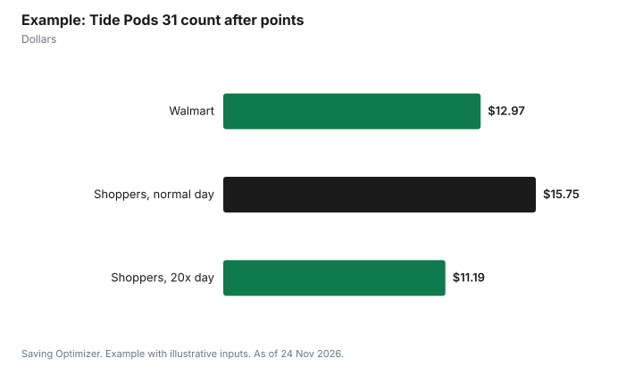

Household Items and Supplies · Canada
Shoppers Drug Mart for Household Items: When PC Optimum Bonus Events Beat Walmart Prices

Shoppers Drug Mart's shelf prices on household items are usually higher than Walmart's. On a normal day, 15 PC Optimum points per dollar (1.5% back) doesn't close the gap. During a 20x the Points event, you get about 30% back on a $50+ shop, and Shoppers often wins.
Key takeaways
- Tide Pods 31 count: $15.99 at Shoppers, $12.97 at Walmart (checked 24 Nov 2026).
- Shoppers base earn: 15 points per $1, or 1.5% back.
- 20x the Points: 300 points per $1, about 30% back, usually with a $50 minimum.
- 10,000 PC Optimum points are worth $10.
- Stock up on detergent, paper and batteries only on 20x days.
Points math vs Walmart
| Where | Shelf price | Price after points |
|---|---|---|
| Walmart | $12.97 | $12.97 |
| Shoppers, normal day (1.5%) | $15.99 | About $15.75 |
| Shoppers, 20x event (30%) | $15.99 | About $11.19 |
How to play the 20x events
- Watch the flyer and app for 20x the Points days.
- Build a $50+ list of non-perishables you use anyway.
- Check exclusions such as prescriptions and gift cards.
- Load personalized offers in the app first.
- Don't buy extra just to hit the minimum.

When to redeem
Points are worth the same $10 per 10,000 points at Shoppers and Loblaw stores. Some redemption events give more value, so hold points if you can wait.
A $60 stock-up: an example
Example: a $60 basket of detergent, paper towels and batteries during 20x earns 18,000 points, worth $18. On a normal day, it earns 900 points, worth $0.90.
See maximizing PC Optimum points, detergent cost per load and Dollarama vs Walmart vs Costco.
Sources
- Shoppers Drug Mart, Tide Pods Spring Meadow 31 count, checked 24 Nov 2026.
- Walmart Canada, Tide Pods Spring Meadow 31 count, checked 24 Nov 2026.
- Milesopedia, Shoppers 20X Points tips (updated 16 Nov 2026), checked 24 Nov 2026.
- PC Optimum, Program benefits table, checked 24 Nov 2026.
Frequently asked questions
Is Shoppers Drug Mart more expensive than Walmart?
Usually on shelf price; Tide Pods 31 count were $15.99 vs $12.97 when checked on 24 Nov 2026.
How many PC Optimum points do you earn at Shoppers?
15 points per $1 on eligible purchases.
How does 20x the Points work?
You earn 20 times the base points, usually on a $50+ pre-tax shop.
What are PC Optimum points worth?
10,000 points are worth $10.
What should I buy on 20x days?
Non-perishables you already use, like detergent, paper and batteries.
Researched and drafted with AI assistance and fact-checked against official Canadian sources. How we create content.
Note: Prices and offers change. Amounts are examples. Education only.